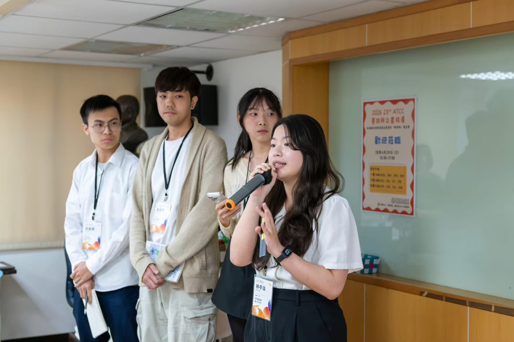
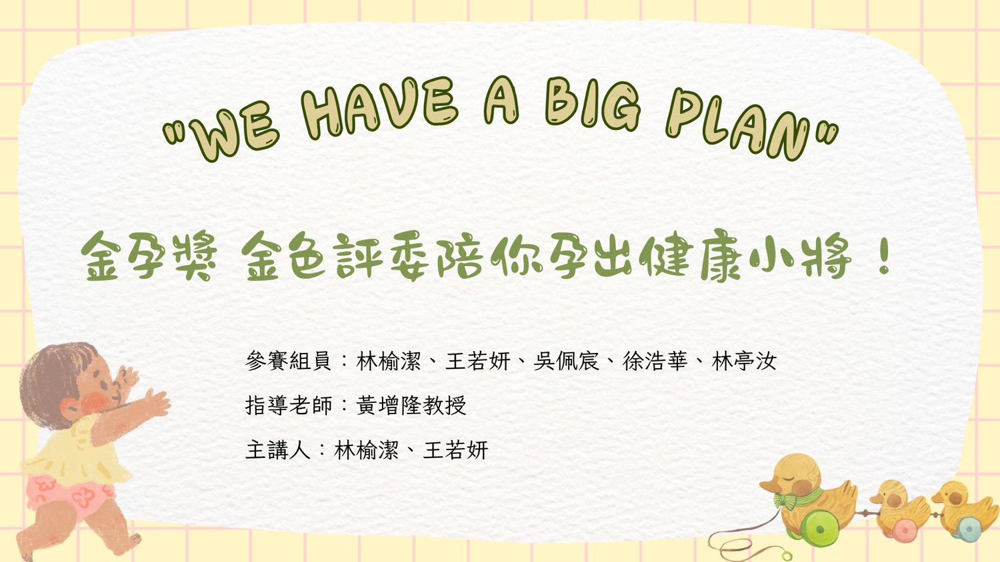

1ST
2026 AI 座艙感知與視覺化 Hackathon
TapAble〈警示會找到你的眼睛〉從無障礙情境出發，思考座艙資訊如何主動抵達真正需要它的人。
IDEAS WE TURNED INTO PROJECTS
我喜歡競賽裡的限時與未知。和夥伴一起，把使用者需求、資料洞察與 AI 原型，變成能被看見、被測試，也能繼續追問的作品。
NEW ACHIEVEMENTS
TapAble〈警示會找到你的眼睛〉從無障礙情境出發，思考座艙資訊如何主動抵達真正需要它的人。
以 TapAble 延伸 AI 與無障礙服務構想，讓公共機台與數位服務更容易被自主使用。
「職影未來」提出〈沒有年資也有證明——臺北影子工單計畫〉，讓青年早期工作經驗有機會被記錄與理解。
作品〈Still Answering〉從太空與人的故事出發，完成網站、展示流程與短片提案。
以「瑤光深鯨 TapAble」準備決選海報，呈現 AI、NFC 與無障礙機台服務的完整脈絡。
WORK IN PROGRESS
這裡記錄的是目前階段，不提前把「晉級」寫成「得獎」。等結果揭曉，再把故事補完整。
RobinSave：在 ASUS UGen300 上運行的裝置端語音 AI 詐騙電話模擬器。
團隊「禍不單行，陪你通行」持續準備政策提案與決賽實作。
以 TapAble 為核心，整理創業敘事、使用者需求與商業模式。
〈yoxi 陪出門〉正進行決賽簡報、七分鐘提案與評審問答準備。
團隊「知更守護」以 InsureDrama／保你有戲探索互動式保險溝通。
KTV LAB 以 Pecha Kucha 形式整理設計問題、原型與下一步。
SELECTED ARCHIVE
點進作品頁，看題目、我的角色、使用的工具，以及可公開的簡報與成果。


AI 與實作 · 2026.07
PressPlay AI⁺
以遊戲化、主動診斷與 AI 陪伴回應學習中斷。



